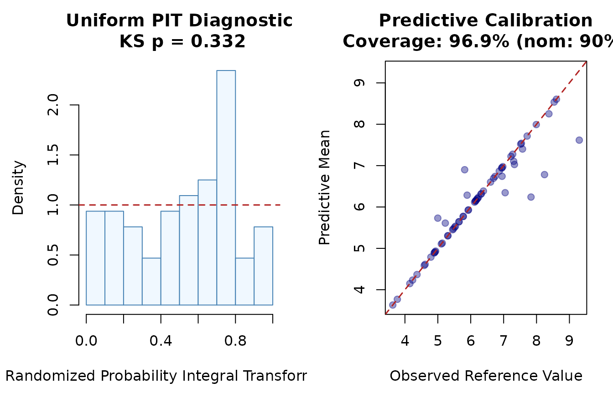
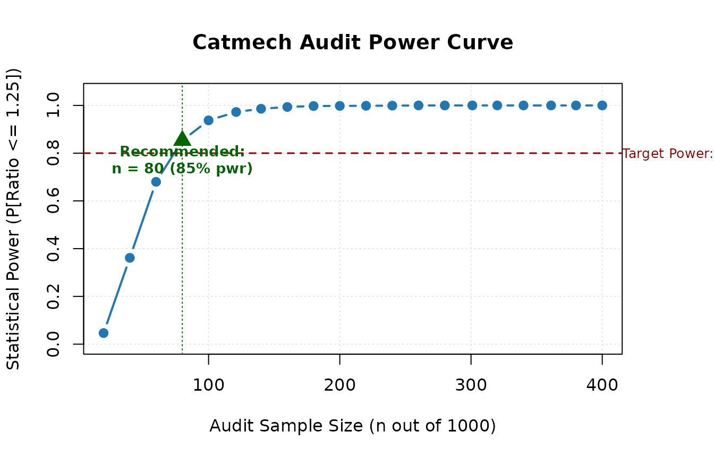
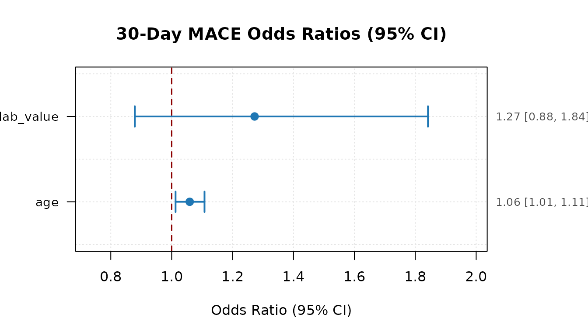
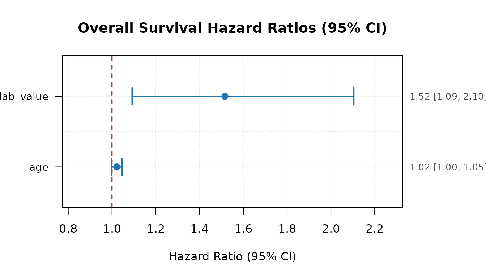
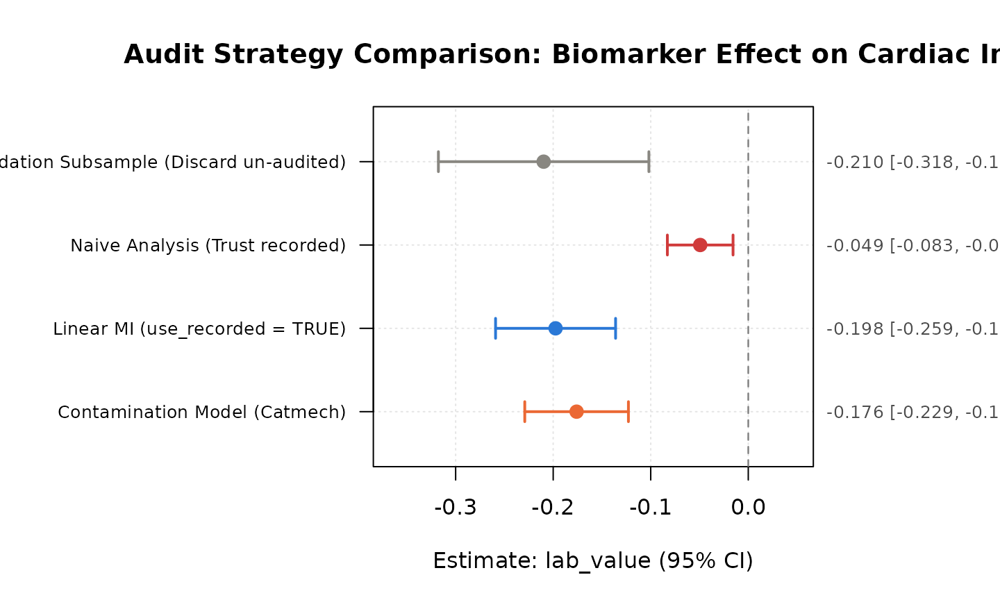

Auditable Clinical Data Verification and Analysis with catmech
Patrick Iben
2026-11-07
Source:vignettes/catmech-clinical-audit.Rmd
catmech-clinical-audit.RmdIntroduction
In multi-center clinical trials, epidemiological studies, and electronic health record (EHR) registries, continuous laboratory measurements (such as troponin, serum creatinine, or viral load) frequently suffer from data quality issues:
- Missing values due to uncollected or lost samples.
- Gross recording errors and data contamination resulting from transcription mistakes, assay batch errors, or EHR unit conversion discrepancies.
- Internal reference audits where a secondary gold-standard measurement is audited on a subset of patient records.
The catmech package provides a
mathematically sound, auditable framework for completing contaminated
measurements, planning audit sample sizes, evaluating predictive
calibration, and pooling downstream linear, generalized linear (GLM),
and survival (Cox PH) regressions under Rubin’s rules with Barnard–Rubin
degrees of freedom.
1. Simulating a Multi-Center Clinical Registry
We simulate a realistic 10-hospital clinical registry with
patients. Each patient has: * An audited gold-standard reference
measurement (lab_true). * A recorded measurement
(lab_value) corrupted in a fraction of patients. * Patient
covariates (age, sex, site). *
Three downstream clinical endpoints: - Continuous outcome
(cardiac_index). - Binary 30-day major adverse cardiac
event (mace_30d). - Time-to-event overall survival
(time, death_event).
library(catmech)
library(survival)
set.seed(2026)
n <- 250
site <- sample(1:10, n, replace = TRUE)
age <- round(rnorm(n, mean = 62, sd = 10))
sex <- sample(c("M", "F"), n, replace = TRUE, prob = c(0.55, 0.45))
# Latent true biomarker
lab_true <- rnorm(n, mean = 6.0 + 0.03 * (age - 62), sd = 1.2)
# Corrupted recorded measurement (12% gross contamination)
corrupted <- rbinom(n, 1, prob = 0.12) == 1
lab_recorded <- lab_true
lab_recorded[corrupted] <- lab_recorded[corrupted] + rnorm(sum(corrupted), mean = 4.5, sd = 2.0)
# Reference audit on a 25% random pilot
audited <- rbinom(n, 1, prob = 0.25) == 1
lab_reference <- ifelse(audited, lab_true, NA_real_)
# Clinical outcomes
cardiac_index <- 2.8 - 0.25 * lab_true + 0.01 * (age - 62) + rnorm(n, sd = 0.5)
pr_mace <- plogis(-2.0 + 0.45 * (lab_true - 6.0) + 0.02 * (age - 62))
mace_30d <- rbinom(n, 1, prob = pr_mace)
# Survival times
haz <- exp(0.35 * (lab_true - 6.0) + 0.02 * (age - 62)) * 0.08
surv_time <- rexp(n, rate = haz)
censor_time <- runif(n, 1, 10)
time <- pmin(surv_time, censor_time)
death_event <- as.numeric(surv_time <= censor_time)
df <- data.frame(
patient_id = 1:n,
site = site,
age = age,
sex = factor(sex),
lab_value = lab_recorded,
lab_ref = lab_reference,
cardiac_index = cardiac_index,
mace_30d = mace_30d,
time = time,
death_event = death_event
)
head(df[, c("patient_id", "site", "age", "lab_value", "lab_ref", "mace_30d")])
#> patient_id site age lab_value lab_ref mace_30d
#> 1 1 9 43 6.111779 NA 0
#> 2 2 1 66 6.970042 NA 0
#> 3 3 6 70 7.333651 NA 1
#> 4 4 4 42 5.012186 NA 0
#> 5 5 5 60 4.937939 NA 0
#> 6 6 10 52 4.324780 NA 02. Fitting the Reference-Calibrated Contamination Model
We fit catmech_contamination() using the audited subset
to model both the probability of corruption and the measurement error
mixture:
fit_contam <- catmech_contamination(
data = df,
value = "lab_value",
reference = "lab_ref",
predictors = c("age", "cardiac_index"),
m = 4,
seed = 42
)
print(fit_contam)
#> <catmech_result: reference_contamination>
#> Target value: lab_value
#> Reference subset: lab_ref (64/250 rows, 25.6%)
#> Predictors: age, cardiac_index
#> Completions (m): 4
#> Imputed rows: 186/250
#> Model convergence: passedThe MCMC sampler generates auditable completions of the target biomarker while properly reflecting parameter uncertainty.
3. Diagnostic Checks & Base R Visualizations
Predictive Holdout Calibration
catmech_holdout_check() tests whether the imputation
model is well-calibrated using cross-validation over the audited
reference cases:
holdout <- catmech_holdout_check(
fit_contam,
folds = 3L,
m = 20L,
seed = 99
)
print(holdout)
#> -- Catmech Holdout Cross-Validation Check --
#> Status: no_miscalibration_detected
#> Folds completed: 3 (holdout rows: 64, partitioned by: row)
#> Predictive coverage: 0.9688 (nominal: 0.9) (uniform PIT KS p-value: 0.3318)
#> Predictive RMSE: model = 0.3997 vs recorded = 1.7378
#> Mean interval width: 0.5483
#> Flags: none
plot(holdout)
The left panel displays the uniform randomized Probability Integral Transform (PIT) histogram with a Kolmogorov–Smirnov test, while the right panel verifies mean predictive calibration.
4. Prospective Audit Sample Size & Power Planning
Before undertaking a chart abstraction audit, investigators can
prospectively compute the required sample size and statistical power
using catmech_audit_power():
pwr <- catmech_audit_power(
N = 1000,
target_ratio = 1.25,
power_target = 0.80,
error_rate = 0.12,
correlation = 0.82
)
print(pwr)
#> -- Catmech Audit Power & Sample Size Calculator --
#> Cohort Size (N): 1000
#> Target Ratio: <= 1.25 (within 25% of full audit width)
#> Target Power: 80%
#> Two-Phase Factor k: 0.028 [0.010, 0.078] (prior_specification)
#>
#> fraction n_audit expected_ratio ratio_lower ratio_upper power
#> 0.02 20 1.587 1.216 2.194 0.046
#> 0.04 40 1.324 1.111 1.694 0.362
#> 0.06 60 1.222 1.074 1.490 0.680
#> 0.08 80 1.168 1.055 1.377 0.853
#> 0.10 100 1.134 1.043 1.304 0.938
#> 0.12 121 1.111 1.035 1.253 0.973
#> 0.14 140 1.094 1.030 1.216 0.986
#> 0.16 160 1.081 1.025 1.187 0.994
#> 0.18 180 1.070 1.022 1.164 0.998
#> 0.20 200 1.062 1.019 1.145 0.998
#> 0.22 220 1.055 1.017 1.130 0.999
#> 0.24 240 1.050 1.015 1.116 0.999
#> 0.26 260 1.045 1.014 1.105 1.000
#> 0.28 280 1.041 1.012 1.096 1.000
#> 0.30 301 1.037 1.011 1.087 1.000
#> 0.32 320 1.034 1.010 1.080 1.000
#> 0.34 340 1.031 1.009 1.073 1.000
#> 0.36 361 1.028 1.009 1.067 1.000
#> 0.38 380 1.026 1.008 1.062 1.000
#> 0.40 400 1.024 1.007 1.057 1.000
#>
#> Recommended Audit Size: n = 80 records (8.0% audit fraction)
#> Achieves 85.3% power (expected ratio: 1.168)
plot(pwr)
The power curve highlights the minimum audit sample size needed to guarantee that the confidence interval width remains within 25% of an ideal full-cohort audit.
5. Downstream Multi-Endpoint Model Pooling
catmech supports downstream pooling across diverse
outcome types:
A. Linear Regression (catmech_pool_lm)
For continuous outcomes, pooling estimates slope parameters with Rubin’s combining rules and cluster-robust standard errors:
res_lm <- catmech_pool_lm(
fit_contam,
cardiac_index ~ lab_value + age,
cluster = "site"
)
print(res_lm)
#> -- Catmech Pooled Linear Model --
#> Completions (m): 4 | Observations (n): 250
#>
#> term estimate std.error df lower upper
#> (Intercept) 2.1940 0.4238 7.2184 1.1980 3.1899
#> lab_value -0.1763 0.0272 4.9056 -0.2466 -0.1059
#> age 0.0025 0.0056 7.4906 -0.0105 0.0154
#> interpretation
#> conditional_contamination_model_cluster_robust
#> conditional_contamination_model_cluster_robust
#> conditional_contamination_model_cluster_robustB. Generalized Linear Models (catmech_pool_glm)
For binary outcomes (such as 30-day MACE),
catmech_pool_glm() fits logistic regression across all
completions, reporting odds ratios via
exponentiate = TRUE:
res_glm <- catmech_pool_glm(
fit_contam,
mace_30d ~ lab_value + age,
family = binomial(),
exponentiate = TRUE
)
print(res_glm)
#> -- Catmech Pooled GLM: binomial (logit link) --
#> Completions (m): 4 | Observations (n): 250
#>
#> term estimate std.error df lower upper estimate_exp
#> (Intercept) -6.9522 1.7310 243.1987 -10.3619 -3.5426 0.0010
#> lab_value 0.2044 0.1618 230.2023 -0.1143 0.5231 1.2268
#> age 0.0576 0.0227 244.8982 0.0129 0.1024 1.0593
#> lower_exp upper_exp
#> 0.000 0.0289
#> 0.892 1.6872
#> 1.013 1.1078C. Survival Proportional Hazards
(catmech_pool_coxph)
For time-to-event outcomes, catmech_pool_coxph() fits
Cox proportional hazards models using observed event counts for
Barnard–Rubin degrees of freedom:
res_cox <- catmech_pool_coxph(
fit_contam,
Surv(time, death_event) ~ lab_value + age,
exponentiate = TRUE,
cluster = "site"
)
print(res_cox)
#> -- Catmech Pooled Cox PH Model --
#> Completions (m): 4 | Observations (n): 250 | Events: 83
#>
#> term estimate std.error df lower upper estimate_exp lower_exp
#> lab_value 0.3851 0.0990 4.1324 0.1135 0.6566 1.4697 1.1202
#> age 0.0209 0.0098 7.4755 -0.0019 0.0437 1.0211 0.9982
#> upper_exp
#> 1.9283
#> 1.04476. Sensitivity Envelope Across Modeling Assumptions
Investigators can prespecify alternative modeling assumptions (e.g., contamination mixture model vs. reference model) and evaluate whether the conclusion is robust across all scenarios:
fit_ref <- catmech_reference(
data = df,
value = "lab_value",
reference = "lab_ref",
predictors = c("age", "cardiac_index"),
m = 4,
seed = 42
)
sens <- catmech_sensitivity(
results = list(contamination = fit_contam, reference = fit_ref),
formula = cardiac_index ~ lab_value + age,
term = "lab_value",
method = "pool_lm",
reference = 0
)
print(sens)
#> -- Catmech Sensitivity Analysis --
#> Status: direction_stable_over_supplied_scenarios (complete: TRUE)
#> Successful envelope: [-0.2772, -0.1058]
#> Scenarios: 2 evaluated
#>
#> scenario status estimate std.error lower upper direction
#> contamination ok -0.1763 0.0298 -0.2363 -0.1163 below
#> reference ok -0.1915 0.0384 -0.2772 -0.1058 below7. Tamper-Evident Regulatory Audit Trail
To satisfy regulatory standards (such as FDA 21 CFR Part 11 and ICH
GCP E9), catmech_audit_trail() outputs a cryptographically
verified record containing SHA-256 checksums of input data, assumptions,
and all completions:
trail <- catmech_audit_trail(
object = fit_contam,
pooled = res_cox,
sensitivity = sens,
format = "markdown"
)
cat(substr(as.character(trail), 1, 1200), "\n... [truncated for display]")
#> # Catmech Audit Trail & Compliance Report
#>
#> **Generated:** 2026-11-07T06:42:44Z UTC | **Catmech Version:** 1.0.0
#> **R Version:** 4.6.2 | **Platform:** x86_64-pc-linux-gnu
#>
#> ---
#>
#> ## 1. Cryptographic Data & Specification Integrity (SHA-256)
#>
#> - **Original Input Data Hash:** `337e3fda57c103ac827c23feadbc66452d323a0b938f245d78fd46bc1dc5e235`
#> - **Assumption Specification Hash:** `bd63c8176604952318d2bc2124bbf603535d58a7cc5963191ed07da19eae4dcf`
#> - **Completed Dataset Checksums:**
#>
#> - Completion `m=1`: `cf442c7284ea912c522aac649a584cf9613ad1fc1036d3f318f3d88d1f050785`
#> - Completion `m=2`: `f3f5b3eb2258fac7c17f74903c09a54522c157bd3751f03fab919d33c03abeb2`
#> - Completion `m=3`: `6e348ac7190dcb9f27b28265a1ea49e6cfcfdc2496021c8f9d1e959e702b29c9`
#> - Completion `m=4`: `1222dcd6aaa6f9e737d5da15df163b24ee6f87b1e53a22992a896d88b8f5a055`
#>
#> ## 2. Cohort Specification & Imputation Profile
#>
#> | Parameter | Value |
#> | :--- | :--- |
#> | Engine | `reference_contamination` |
#> | Target Value Column | `lab_value` |
#> | Reference Column | `lab_ref` |
#> | Predictors | age, cardiac_index |
#> | Cluster Variable | `none` |
#> | Total Observations | 250 |
#> | Completions (m) | 4 |
#> | Imputed Records | 186 (74.4%) |
#> | Convergence Sta
#> ... [truncated for display]The resulting audit trail guarantees complete transparency, traceability, and reproducibility.
8. Visualizing Pooled Models with Forest Plots
Clinical trial readouts and regulatory reports frequently require
visual representation of effect sizes and confidence intervals.
catmech provides native base R plot() methods
for all pooled regression models:
# Forest plot for pooled logistic regression (Odds Ratios)
plot(res_glm, exponentiate = TRUE, main = "30-Day MACE Odds Ratios (95% CI)")
# Forest plot for pooled Cox survival model (Hazard Ratios)
plot(res_cox, exponentiate = TRUE, main = "Overall Survival Hazard Ratios (95% CI)")
9. Side-by-Side Audit Strategy Comparison
To evaluate how much precision is recovered and whether point
estimates shift across different ways of handling un-audited records,
catmech_compare_strategies() evaluates all four core
workflows side by side:
comp <- catmech_compare_strategies(
data = df,
value = "lab_value",
reference = "lab_ref",
formula = cardiac_index ~ lab_value + age,
m = 4,
seed = 2026
)
print(comp)
#> -- Catmech Audit Strategy Comparison --
#> Cohort Size (N): 250 | Audited Records (n): 64 (25.6% audit fraction)
#>
#> strategy term estimate std.error ci_width rel_efficiency
#> validation_subsample (Intercept) 2.8243 0.5965 2.3854 1.0000
#> validation_subsample lab_value -0.2098 0.0540 0.2158 1.0000
#> validation_subsample age -0.0030 0.0082 0.0326 1.0000
#> naive_trust_recorded (Intercept) 1.5703 0.2416 0.9517 6.0957
#> naive_trust_recorded lab_value -0.0493 0.0171 0.0673 9.9663
#> naive_trust_recorded age 0.0006 0.0036 0.0142 5.1305
#> linear_mi_recorded (Intercept) 1.8167 0.3464 1.4185 2.9658
#> linear_mi_recorded lab_value -0.0846 0.0350 0.1426 2.3752
#> linear_mi_recorded age -0.0002 0.0041 0.0166 3.9178
#> contamination_model (Intercept) 2.1324 0.2611 1.0304 5.2172
#> contamination_model lab_value -0.1642 0.0287 0.1134 3.5354
#> contamination_model age 0.0022 0.0035 0.0137 5.4889
# Forest plot comparing all 4 strategies for the target measurement
plot(comp, term = "lab_value", main = "Audit Strategy Comparison: Biomarker Effect on Cardiac Index")
10. Practitioner Decision Flowchart
When deciding which audit imputation model or downstream pooling approach to deploy, investigators should follow this evidence-based decision framework:
| Scenario / Error Pattern | Recommended Method | Rationale & Benchmark Findings |
|---|---|---|
| Subtle or diffuse errors (transcription slips, calibration drift) | catmech_reference(use_recorded = TRUE) |
Linear MI matches or beats complex models on real recording differences (ClinicalTrials.gov & NHANES) with narrower intervals and fewer assumptions. |
| Gross / separable spikes (10x decimal errors, unit confusion) | catmech_contamination() |
The contamination mixture model explicitly estimates per-record error probability, achieving 94.0% coverage vs. 64.7% for linear MI under gross synthetic errors. |
| Multi-center / clustered sites |
catmech_reference(cluster_model = "joint") +
cluster-robust pooling |
Bivariate Gaussian site model handles mixed within-cluster recording
patterns, with delete-one-cluster jackknife (cv3)
variance. |
| Prospective sample size planning | catmech_audit_power(N, target_ratio) |
Computes audit sample sizes to achieve desired relative interval width; recommend audit sizes of at least 10%–15% () for stable variance estimation. |
| Sensitivity check across strategies | catmech_compare_strategies() |
Directly compares validation subsample, naive analysis, linear MI, and contamination model side by side. |
| Regulatory submission | catmech_audit_trail() |
Cryptographically documents input SHA-256 hashes, options, and pooled results for compliance (FDA 21 CFR Part 11 / ICH E6). |